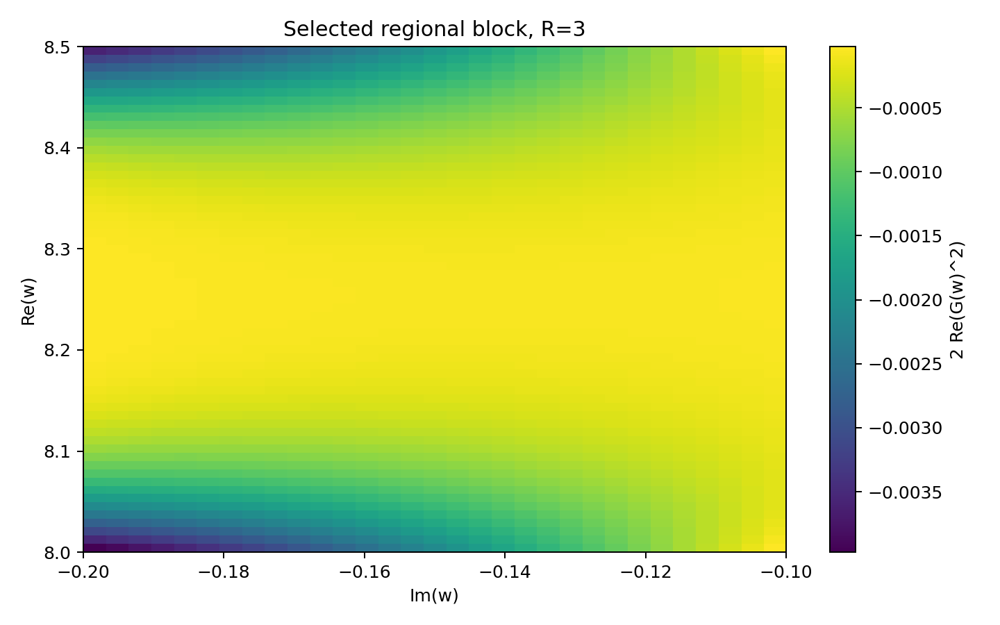
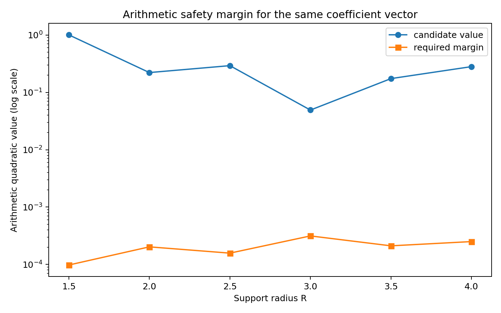

← Semi-Autonomous Research / Engineering Record / Separation–Positivity Intersection Solver
Separation–Positivity Intersection Solver
Separation–Positivity Intersection Solver v0.1 — Simultaneously tests the off-axis block negative direction and arithmetic quadratic form positivity on the same set of real coefficient vectors; finite grid intersections are found for all six support radii R.
intersection_scan.csv in the package self-reports intersection_found_on_grid=True row by row, reproduced here as-is. A finite grid intersection is not a continuous rectangle certificate, and floating-point positivity is not an interval PSD certificate; this package neither proves nor disproves the Riemann Hypothesis.
Connections
The technical description of this package explicitly states at the beginning which two packages it connects to, quoted as-is.
"The previous two engineering packages respectively found: 1. Coefficients that form a negative orbit block on an off-axis rectangle; 2. An arithmetic matrix that remains numerically positive under another set of bases and constraints. However, it had not yet been proven that both use the same coefficient vector. This package unifies the two for the first time." — Excerpted from this package's Technical Notes §1.
The files for Prerequisite Packages 1 and 2 are byte-for-byte identical to the two packages in the AI autonomous track's side-branch prototype area. To maintain the "no data merging" policy between the two tracks, the files are kept only on the AI autonomous track side, linked here for reference. The corresponding theory points to the Paley–Wiener regional phase shaping lemma—this package is the first numerical implementation attempt of that lemma.
Technical Notes
Loading...
Result Data
Loading...
Figures
Three images from outputs/ within the package, reproduced as is, without post-processing.



Files
Raw data (large CSVs like selected_region_block.csv, selected_psi.csv) and compilation caches are not listed individually; they are all in the complete zip file.
Loading...
sha256 6ff96e0da85651dce1f9edb71e116f7290d123cf64e13a5c4a9aaba72e0987b7